Real-world motivation¶
Listen first · “Mandelbrot Set”¶
Technical caveat: the song conflates the parameter c with the initial state z0. The next slide gives the precise definition.
The Mandelbrot set¶
$$z_{n+1}=z_n^2+c,\qquad z_0=0$$
The Mandelbrot set contains the values $c$ for which this orbit remains bounded (black). Outside the set, colour usually records how quickly the orbit escapes: points with similar escape times receive similar colours.
Our generative model · A local branching rule¶
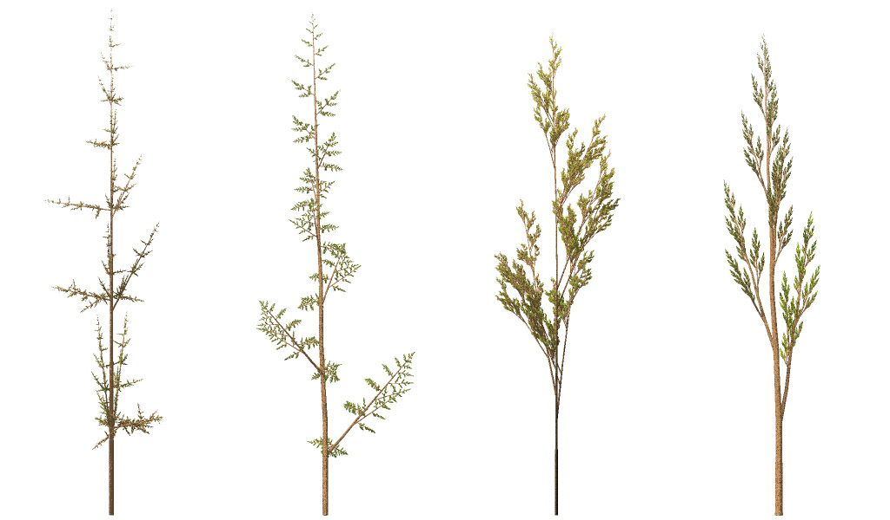
Explorable¶
Same form, different systems¶
Development from active tips.
Propagation through an electric field.
Flow, deposition, and changing channels.
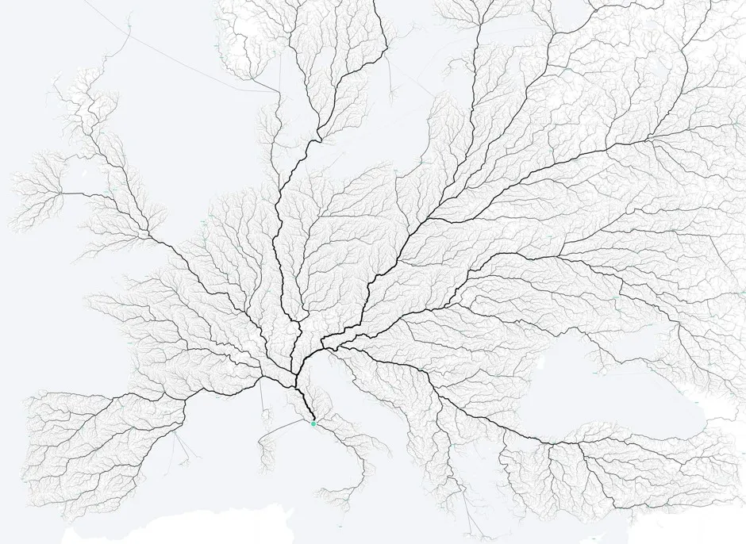
Road networkHuman decisions constrained by geography, cost, and shared destinations.
Branching can distribute or collect material and connect many local sites to larger pathways. Similar form does not imply identical mechanism.
{kind=link}
Another route to fractal-like growth¶
Material arrives from outside the growing structure.
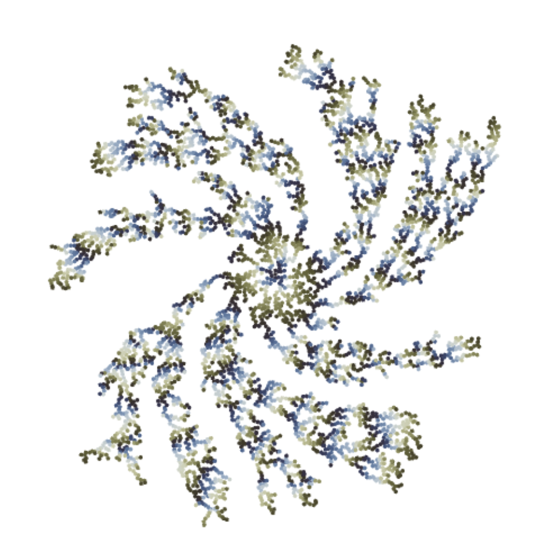
Diffusion-limited aggregationRandomly transported particles attach irreversibly. Exposed regions intercept more arrivals and screen the interior.
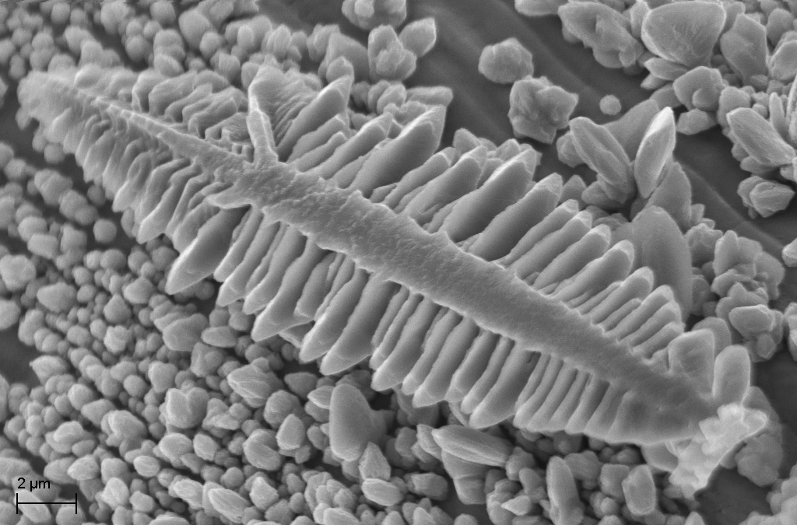
ElectrodepositionIons travel through solution and deposit preferentially at exposed tips.
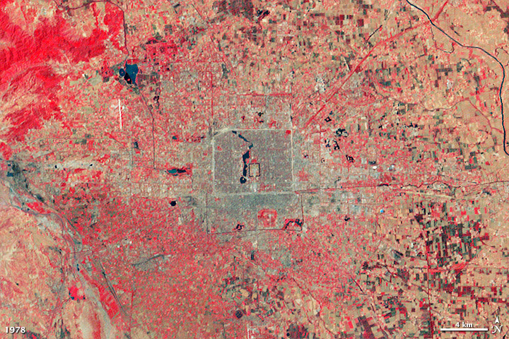
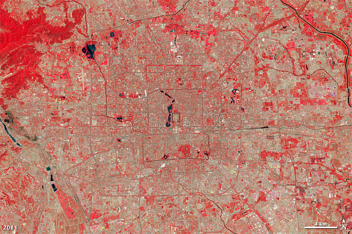
Many constrained decisions produce irregular advancing boundaries and corridors.
Unlike developmental branching, mass arrives from outside. Similar morphology suggests a comparison, not a shared mechanism. We return to this model after Brownian motion and agent-based modelling.
From ideal forms to natural complexity¶
But …¶
Euclidean forms remain useful reference models. Fractal geometry gives us a language for natural structure that stays irregular as scale changes.
What are we looking at here?¶
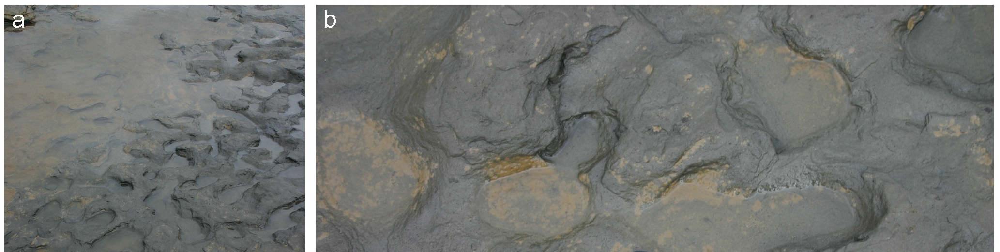
A Euclidean object in the photo helps¶
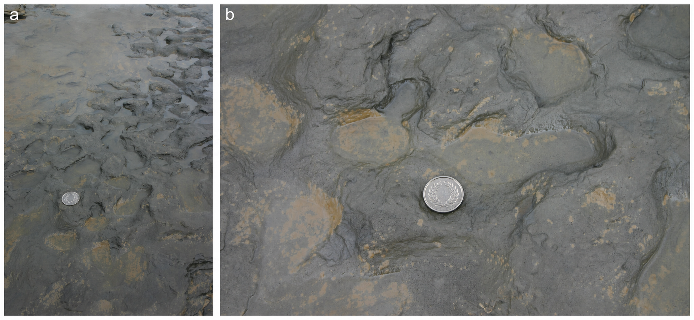
The photographer included a penny.
Its known diameter acts as a Euclidean ruler, supplying one characteristic length against which every other length can be compared.
I lied¶
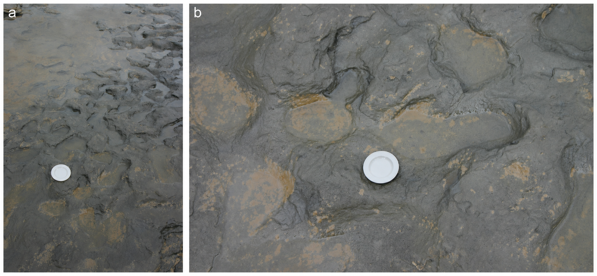
That was not a coin. It was a dinner plate.
This is a giant footprint, left by something that once walked across this land.
Now the truth¶
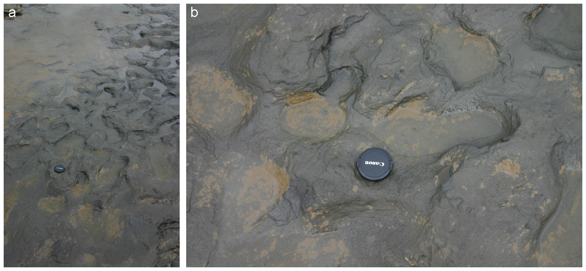
The photographed object is a lens cap.
These are the Happisburgh hominin footprints, preserved in Early Pleistocene deposits on the Norfolk coast.
They provide evidence of early human presence in northern Europe more than 800,000 years ago.
Symmetry of a Euclidean object¶
| Reflect a circle through its centre | the image is unchanged |
|---|---|
| Rotate a circle about its centre | the image is unchanged |
| Magnify its boundary | a smooth edge becomes locally one-dimensional |
| Magnify its interior | a filled region becomes locally two-dimensional |
Magnification is not a symmetry of the circle. At sufficiently high magnification, neither its edge nor its interior still looks like a circle.
Symmetry of a fractal object¶
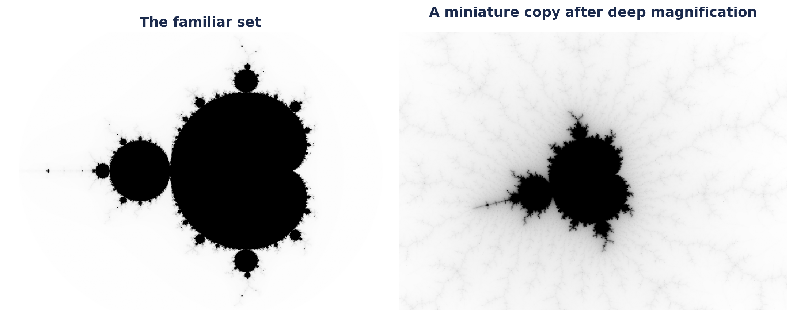
Symmetry under magnification: after a large change in scale, related Mandelbrot organisation reappears. It is recognisable without being an identical copy of its entire neighbourhood.
For empirical forms, resemblance under magnification is approximate and holds only across a finite range of scales.
An empirical form: cauliflower¶
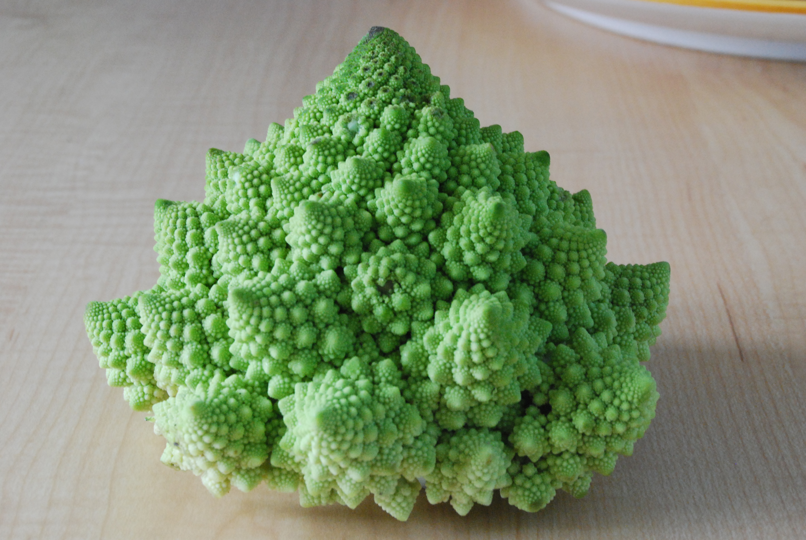
Smaller branching structures resemble the larger form, but not exactly.
Growth, finite cell size, damage, and environmental variation limit the scaling range.
The useful claim is statistical similarity across stated scales, not infinite exact replication.
Evidence check: identify a scaling range, a measurable recurring feature, and the physical cut-offs.
{kind=link}
Model details¶
Exact fractals and fractal-like forms¶
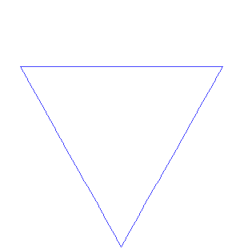
Exact · Koch curveA precise rule continues without bound and its dimension can be calculated.
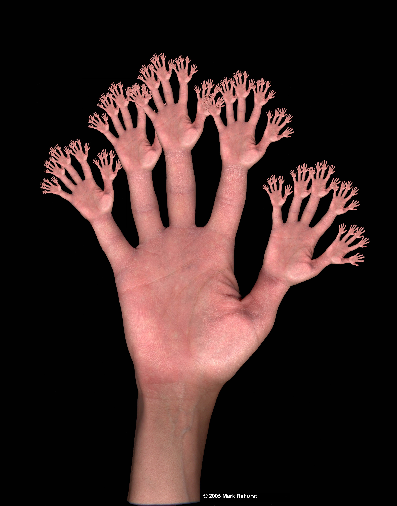
Finite recursionLike a fern, motifs recur for only finitely many levels. A scaling claim needs measurements across that finite range.
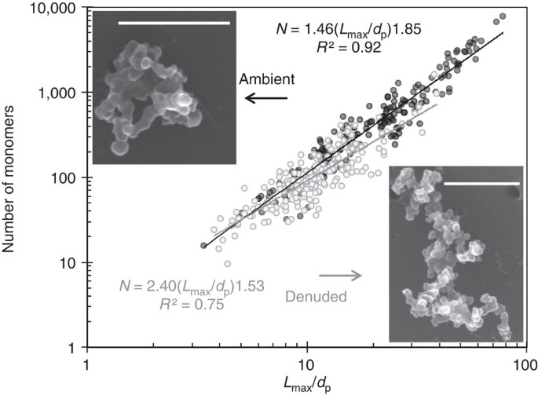
Statistical · soot aggregatesAggregate mass and radius obey an ensemble scaling law over a measured range; coating changes the estimated dimension.
Fractal properties¶
There is no single, universal definition of a fractal. Instead, fractals are typically recognised by a combination of distinctive properties:
- Self-similarity: parts of the shape resemble the whole. They are made from smaller copies or related versions of itself, often through recursion or iteration.
- Infinite complexity: in a mathematical fractal, detail persists at arbitrarily small scales.
- Fractal dimension: a typically non-integer dimension reflects how the shape scales or fills space.
For natural and empirical forms, self-similarity and complexity hold only approximately over a finite, stated range of scales.
What evidence counts as fractal?¶
- Name the feature. Boundary roughness, occupied mass, branching, or another measurable quantity.
- Change resolution. Test whether its scaling is stable across several defensible scales.
- State the limits. Report cut-offs, uncertainty, and sensitivity to representation.
A convincing claim links a visible pattern to a reproducible scaling measurement over a stated range.
Build a controlled fractal¶
The motivating systems are finite, noisy, and dependent on their mechanisms. To understand scaling and dimension cleanly, we now remove that messiness on purpose.
The Cantor set and Sierpiński triangle are not complex systems in this unit. They are controlled mathematical constructions. Their exact rules let us establish what scaling quantities mean before estimating them in branching forms and coastlines.
When smoothness fails¶
An early mathematical “monster”¶
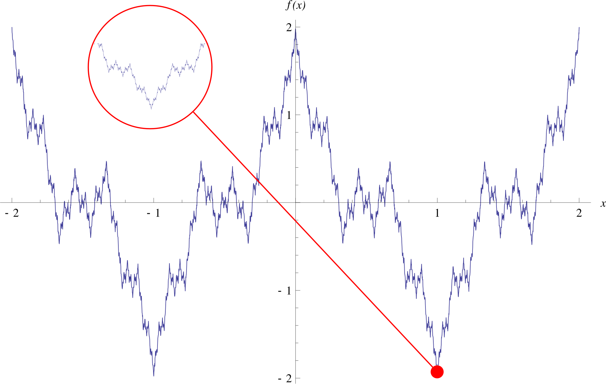
For suitable a between 0 and 1 and integer b greater than 1, higher-frequency waves enter with smaller amplitudes.
The sum is continuous, but no point settles into a straight local tangent.
$$W(x)=\sum_{n=0}^{\infty}a^n\cos\!\left(b^n\pi x\right)$$
Cantor, Sierpiński, and Weierstrass were all associated with the nineteenth- and early twentieth-century tradition of mathematical “monsters”: exact counterexamples that exposed limits in familiar geometric and analytic intuition. Weierstrass challenges tangents, Cantor challenges length and cardinality, and Sierpiński challenges area and boundary.
Exact fractals¶
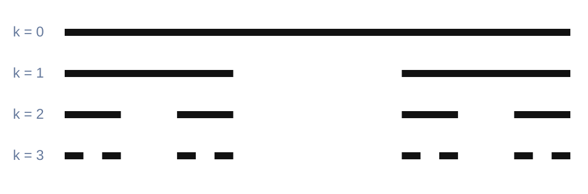
Keep two copies, each scaled by one third.
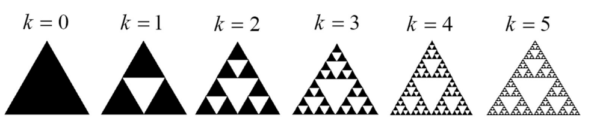
Keep three copies, each scaled by one half.
These are not themselves complex systems. Their exact rules let us isolate ideas that empirical and emergent patterns express only approximately.
Three descriptions of an exact fractal¶
Replace one piece with smaller pieces.
Next: 1A Cantor set and 1B Sierpiński triangle.
Shrink and reposition points or sets using contraction maps.
Next: 2A Cantor IFS, 2B Sierpiński IFS, then the chaos game as random iteration of that IFS.
Rewrite symbols, then interpret the resulting word geometrically.
Next: Cantor and Sierpiński symbolic constructions.
For Cantor and Sierpiński these are alternative mathematical encodings. A causal interpretation must be justified separately.
1A. Cantor set · initiator and generator¶
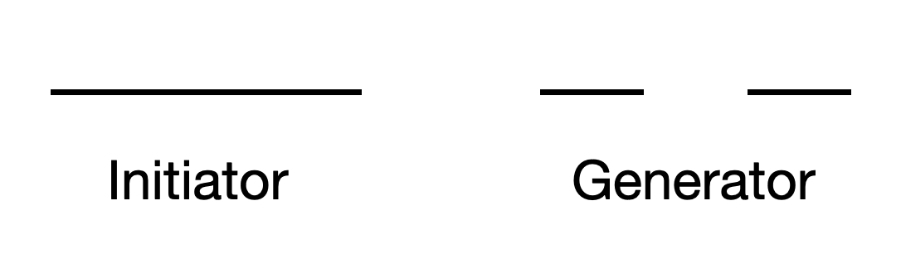
Initiator: the starting object.
Generator: the replacement rule applied at every scale.
1B. Sierpiński triangle · initiator and generator¶
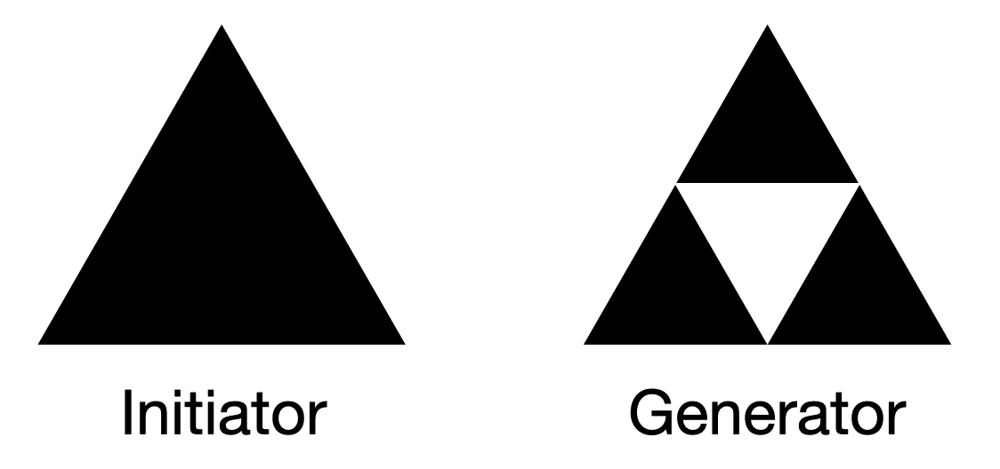
Initiator: one filled triangle.
Generator: replace it with three half-scale corner triangles.
2A. Cantor set · iterated function system¶
For the Cantor set, apply both contractions to the current set:
$$f_0(x)=\frac{x}{3},\qquad f_1(x)=\frac{x}{3}+\frac{2}{3}$$
$$C_{k+1}=f_0(C_k)\cup f_1(C_k)$$
2B. Sierpiński triangle · iterated function system¶
Let P1, P2, and P3 be the vertices of the initial triangle.
Each map contracts towards one vertex. The three images together form the next approximation.
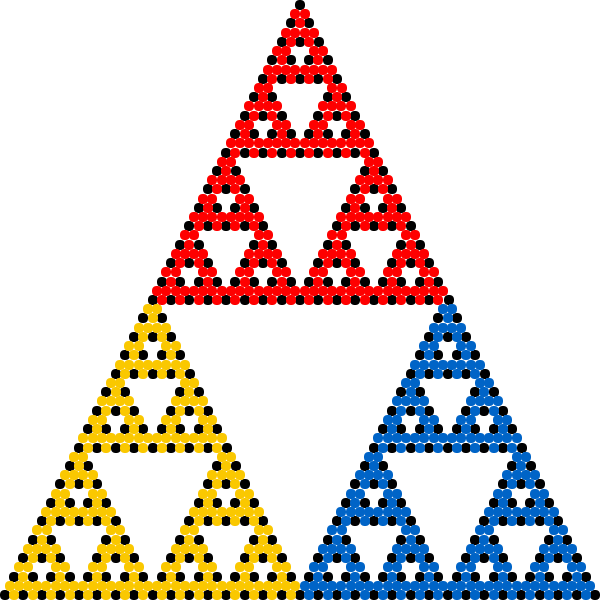
2C. Sierpiński triangle · chaos game¶
The chaos game is a random iteration algorithm for the same IFS, not a fourth description.
Instead of applying all three maps to a set, repeatedly choose one map at random and apply it to a single point.
The randomness selects a path. The contraction maps constrain the possible long-run geometry.
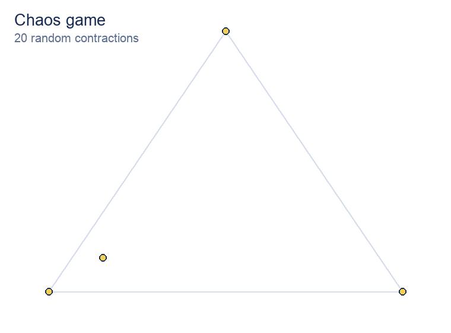
Controlled geometry vs stochastic iteration¶
Cantor and Sierpiński let us isolate infinite iteration, scaling and dimension exactly. The removed middle is a mathematical construction, not necessarily a literal history.
One point follows randomly selected contraction maps. This is a dynamical construction, not an interacting many-agent system.
3. L-systems: symbols first, geometry second¶
An L-system rewrites a word in parallel. We specify
$$G=(V,\omega,P)$$
where $V$ is the alphabet, $\omega$ is the axiom or initial word, and $P$ is the set of production rules. Every symbol in the current word is replaced simultaneously.
The word has no geometric length by itself. A separate turtle interpretation assigns actions to symbols, a turning angle, and a step length. If the step length is fixed, the drawing grows with each rewrite. To compare successive approximations inside the same frame, we shorten the step at generation $k$.
3A. Cantor set · L-system¶
This rule produces the standard middle-thirds Cantor set. Other Cantor-like sets use different contraction ratios or removal rules.
Alphabet: V = {A, B}
Meaning: A draws; B moves without drawing
Initial word: ω = A
Productions: A → ABA, B → BBB
Each finite word describes one stage of the construction.
3B. Sierpiński triangle · L-system¶
Alphabet: V = {F, G, +, −}
Meaning: F and G draw; + turns left by 60°; − turns right by 60°
Initial word: ω = F
Productions: F → G−F−G, G → F+G+F
Geometry: initial heading 60°; turns 60°
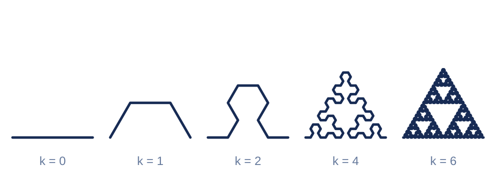
Three descriptions, three emphases¶
| Description | Most useful when | Real-world connection |
|---|---|---|
| Replacement | each piece is replaced by a repeated motif | an idealised rough boundary that develops structure hierarchically |
| IFS | the whole is composed of transformed smaller copies | a Barnsley fern describes fern-like geometry efficiently |
| L-system | local instructions generate successive stages | branching plant growth from active tips |
Infinite complexity is a limiting claim¶
At every finite depth, the construction contains only finitely many pieces. The mathematical fractal is the limiting object obtained by allowing the iteration depth to increase without bound.
| Finite iteration | a computable approximation with a smallest represented feature |
|---|---|
| Infinite limit | new structure exists at arbitrarily small scales |
| Empirical system | scaling can hold only between physical lower and upper cut-offs |
This is why an image cannot by itself demonstrate infinite complexity.
Cantor set¶
| Number | Nk = 2k intervals |
|---|---|
| Length of each | ℓk = 3−k |
| Total length | Lk = Nkℓk = (2/3)k → 0 |
Sierpiński triangle¶
Let $A_0$ and $P_0$ be the area and perimeter of the initial filled triangle. At depth $k$, there are $3^k$ triangles, each with side length $2^{-k}$ times the original.
| Number | Nk = 3k triangles |
|---|---|
| Side length | ℓk = 2−k |
| Retained area | Ak/A0 = (3/4)k → 0 |
| Total perimeter | Pk/P0 = 3k2−k = (3/2)k → ∞ |
Analysis¶
Infinite detail changes what “size” means¶
It lies on a line and contains uncountably many points, yet its total length is zero.
Its area tends to zero while its boundary length diverges.
Count, length, area, boundary, and scaling dimension measure different geometric features. Calling these objects a collection of points, a curve, or a region hides the behaviour we want to compare.
Dimension is exactly the property we need: it records how the amount of visible structure grows as resolution increases. We will first reconstruct that scaling meaning for ordinary Euclidean objects, then allow its exponent to be non-integer for a fractal.
What do we mean by dimension?¶
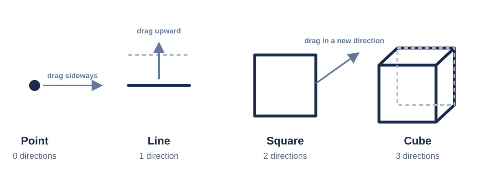
Each new dimension adds an independent direction in which a point can vary.
Dimension as information¶
To identify one location to a chosen precision, how many independent numbers must we provide?
| Space | Information needed |
|---|---|
| Line | one coordinate: x |
| Plane | two coordinates: (x, y) |
| Space | three coordinates: (x, y, z) |
| ℝn | n independent coordinates: (x1, …, xn) |
Dimension as a scaling count¶
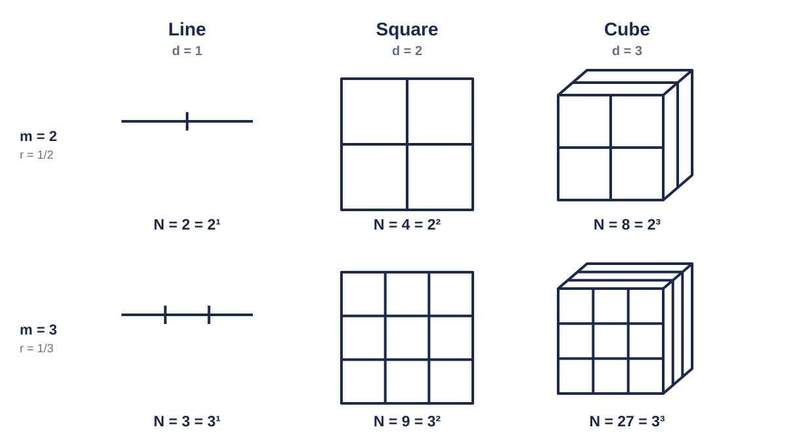
Halve the length scale: a line needs 2 copies, a square 4, and a cube 8.
m: pieces along each direction
r: linear scale of one copy, equal to 1/m
d: dimension
N: copies needed
For Euclidean objects, $N=m^d=r^{-d}$.
Similarity dimension from self-similarity¶
For an exact self-similar fractal, the similarity dimension keeps the Euclidean scaling rule but no longer assumes an integer exponent:
$$N=r^{-D}$$
so
$$D=\frac{\log N}{\log(1/r)}$$
Here $N$ is the number of self-similar copies and $r$ is the linear scale of each copy relative to the whole. Both remain meaningful beyond these exact examples: we can count visible pieces and state the resolution at which we observed them.
Cantor set dimension¶
Two copies remain, each scaled by one third:
$$D_C=\frac{\log 2}{\log 3}\approx0.631$$
It grows in visible detail faster than isolated points, but more slowly than a complete line: $0\lt D_C\lt 1$.
Sierpiński triangle dimension¶
Three copies remain, each scaled by one half:
$$D_S=\frac{\log 3}{\log 2}\approx1.585$$
It grows in visible detail faster than a curve, but more slowly than a filled region: $1\lt D_S\lt 2$.
Exact dimension is not always available¶
This was the problem Mandelbrot was tackling.
A coastline has no known exact generator, only a finite statistical scaling range.
A straight ruler resolves some bends and skips others, so ruler length is part of the measurement.
The smaller ruler reveals additional structure faster than the ruler length decreases.
We therefore need an empirical procedure that tracks visible structure across resolutions.
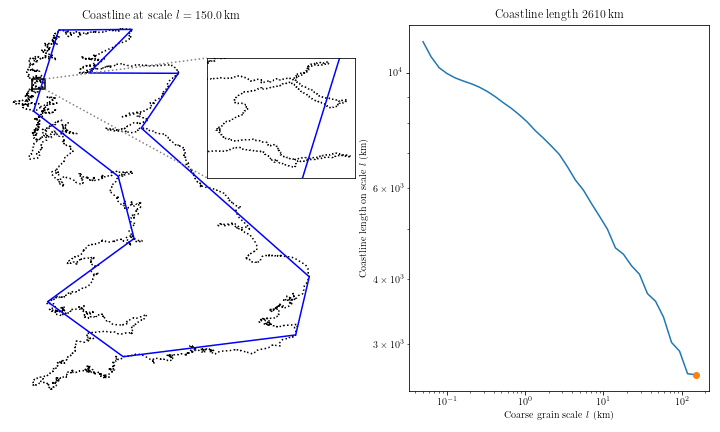
This returns us to Mandelbrot's motivating problem: How long is the coast of Britain?
Box counting¶
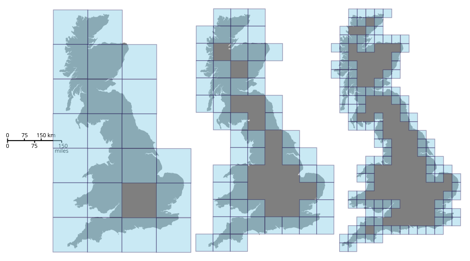
Cover the object using boxes of side length ε. Count the occupied boxes N(ε).
If the count follows a power law, a log-log plot has slope D.
This is the box-counting, or Minkowski–Bouligand, dimension.
$$D_B=\lim_{\varepsilon\to0}\frac{\log N(\varepsilon)}{\log(1/\varepsilon)}, \qquad \log N(\varepsilon)\approx D\log(1/\varepsilon)+c\quad\text{for finite data}$$
{kind=link}
Why can a count reveal dimension?¶
Halve the box width and ask how the occupied count multiplies:
| Smooth curve | about 2 times as many boxes: 21 |
|---|---|
| Filled region | about 4 times as many boxes: 22 |
| Fractal boundary | between 2 and 4 times: 2D, with 1 < D < 2 |
Dimension is the exponent that makes the multiplication of visible detail predictable across scales. Taking logarithms turns that repeated multiplication into a slope.
For an ideal object the ratio may converge as $\varepsilon\to0$. For empirical data, we instead look for a stable slope across a justified finite scaling range.
A straight line is not enough¶
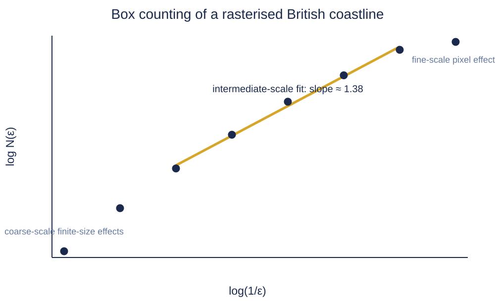
A fitted slope is credible only across a justified scaling range.
Fine scales can saturate at pixel resolution. Coarse scales feel the finite size of the country.
Too few scales, thresholding, grid placement, or a crossover between mechanisms can also create an apparently straight region.
Scaling is a claim to interrogate, not a visual effect to admire.
Different coastlines¶
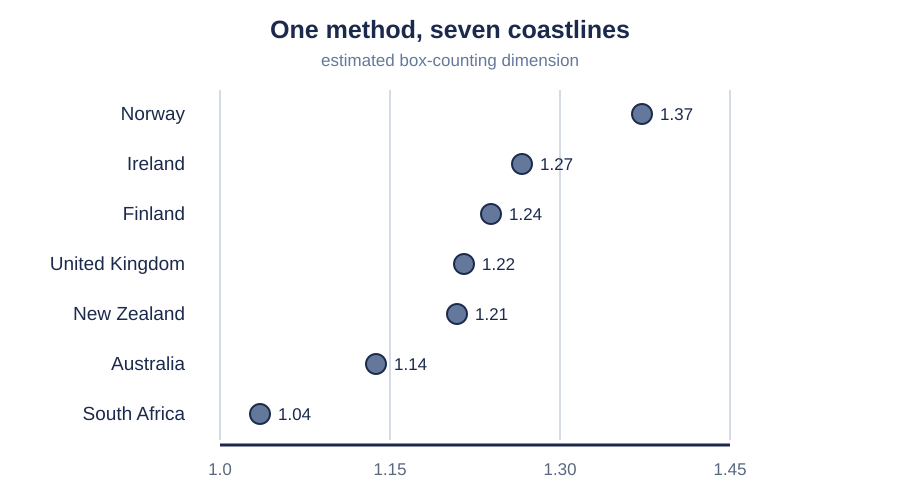
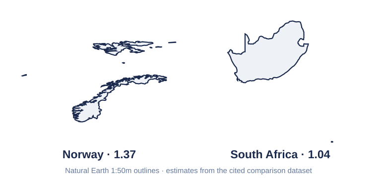
A larger estimate means: occupied coastline detail grows faster as the map resolution becomes finer.
It does not mean: a better coast, a longer coast at every stated resolution, or one universal geological mechanism.
The useful next question: do fjords, islands, erosion, lithology, glaciation, tides, or mapping choices explain the contrast?
Evidence check: one exponent is useful only if a stable scaling range and measurement protocol are reported.
From dimension to scale-free behaviour¶
Measured object
N(ε) ∝ ε−D
ε is the box width and N(ε) the occupied-box count. The fitted exponent records how the count changes with resolution.
Exact self-similarity
N = LD, D = log N / log L
Reducing each length to 1/L reveals N copies. The exponent is exact.
What Euclidean geometry keeps, and what it misses¶
Scale is the size or resolution at which we observe, measure, or describe a system.
Its radius is a characteristic scale. Magnification reveals a smooth arc, then a locally straight boundary.
No single length organises its boundary. Changing resolution continues to reveal structured detail.
Shape, position, size, and rigid motions still describe both objects. They do not describe how boundary detail changes with resolution.
A scaling law is not always self-similarity¶
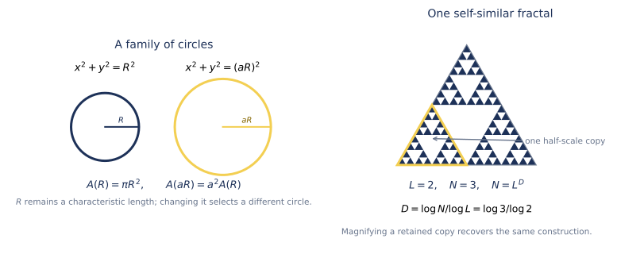
Doubling the radius multiplies area by 22 = 4. This is a scaling law for a family of circles. A particular circle still contains the characteristic length R.
Reducing each length to 1/L reveals N = LD copies inside the same set. The structure repeats; D is a dimensionless ratio of complexity across scales, not a physical size.
When do we call a relationship scale-free?¶
A particular object
x2 + y2 = R2
The fixed radius R is a preferred length. Magnifying the boundary eventually reveals a smooth one-dimensional arc rather than another complete circle.
A relationship across scales
f(ax) = aαf(x)
A relationship is scale-free when the same rescaling rule holds without introducing a preferred value of x. The factor a is chosen by us. The exponent α remains fixed.
The area relation A(R) = πR2 is homogeneous in R, but this does not make the geometry of one fixed circle self-similar under magnification. Always state what object or relationship is being rescaled.
Scale-free patterns in real complex systems¶
Scale-free and approximately scale-free relationships appear in many kinds of system. Here we compare trees, organisms, networks, language, cities, earthquakes, and critical phenomena.
The recurring mathematical question is:
Does the same relationship remain useful when the scale of observation or system size changes?
The examples need not share a mechanism. The scaling relationship is a system-level pattern that a model must explain.
Example 1: Branching trees¶
What could scale here?
Within one tree, compare branch number, length and diameter across branching ranks.
Across trees, compare height, crown width, foliage or biomass with trunk diameter.
A repeated branching rule gives us a form. A scaling analysis asks which ratios remain reasonably stable as size or rank changes.
Across forests and trees¶
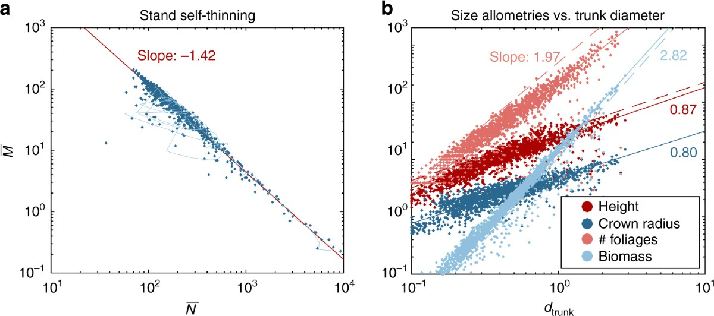
Across forests and trees
Figure 3a: competition for light produces a relationship between stand density and average biomass.
Figure 3b: height, crown radius, foliage number and biomass scale with trunk diameter across many simulated trees.
The trends are approximately allometric, but the height relationship bends for larger trees. Finite size still matters.
Within one tree¶
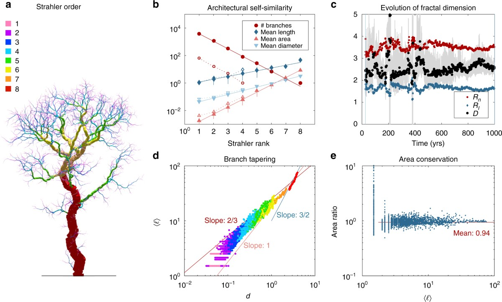
Across branching ranks
Strahler order groups branches by their position in the hierarchy.
Branch number, mean length, area and diameter follow approximate geometric progressions across ranks.
The corresponding fractal dimension changes while the tree is young, then becomes more stable as the architecture develops.
Across species¶
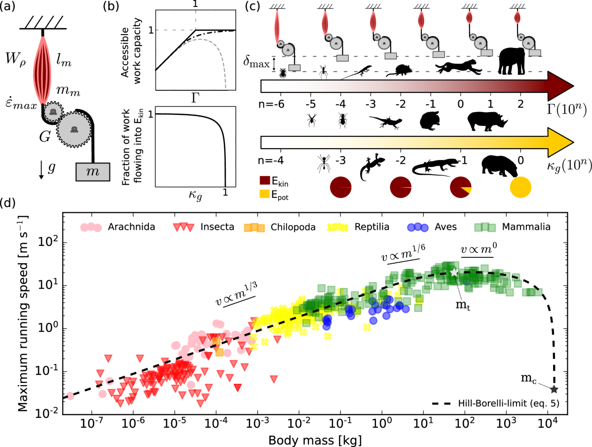
An allometric relationship compares one biological measurement with another, often using body mass as the reference:
Y = cMβ.
A single power law would be scale-free over its fitted range.
Maximum running speed is a useful counterexample. It rises and then falls with body mass because different physical constraints dominate at different sizes.
More examples¶
| System | Measured relationship | Important qualification |
|---|---|---|
| Language | word frequency versus rank | Zipf scaling is approximate and corpus-dependent |
| Cities | population versus rank | definitions of a “city” and the fitted range matter |
| Earthquakes | event frequency versus size | catalogue completeness sets a lower cut-off |
| Critical systems | event size or duration distributions | finite systems impose upper cut-offs |
| Networks | node-degree distributions | heavy-tailed does not automatically mean power-law |
Real systems are scale-free only over a range¶
Exact fractals continue through every mathematical generation. Real systems have limits.
| Lower cut-off | Cell size, grain size, or measurement resolution becomes visible. |
|---|---|
| Scaling range | The same approximate relationship is useful across several scales. |
| Upper cut-off | The finite size and global geometry of the system become important. |
The measured quantity is approximately scale-free over a stated range.
That range is part of the result. It must be justified using the system and the measurement process.
Scope and connections¶
Why this matters in Complex Systems¶
Fractal geometry applies scaling ideas to spatial structure. The same language can describe other quantities, including event sizes, durations, fluctuations, and network measurements.
Scale-free behaviour may arise from several different mechanisms. Later in the unit we will see it in connection with critical phenomena, percolation, and self-organised criticality. Observing a power law does not identify the mechanism by itself. It gives us a compact pattern that the mechanism must explain.
Very different (complex) systems¶
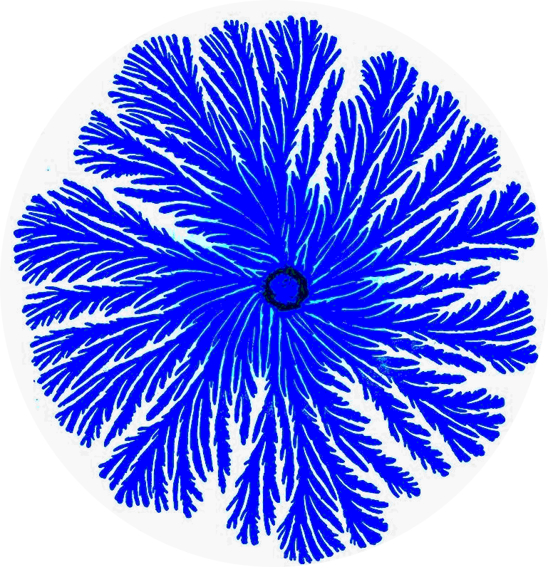
Colony growthCells alter local resources and the frontier available to later growth.
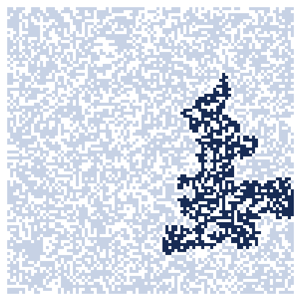
Critical percolationLocal occupancy produces connected clusters and voids across many sizes near the transition.
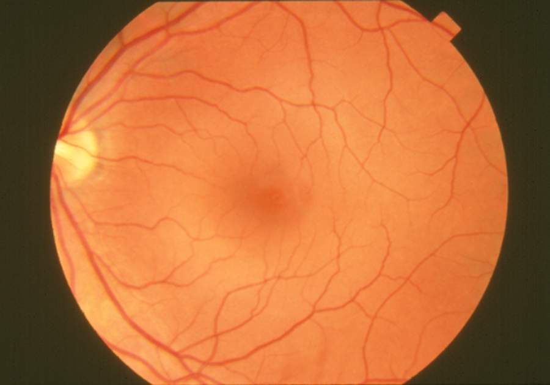
Retinal vasculatureA nested physiological network distributes blood across the retinal surface.
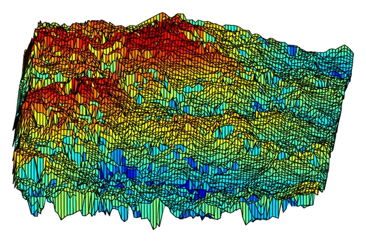
Rough fracture surfaceMaterial heterogeneity and fracture propagation create structure across a finite range of scales.
 Crystal growth
Crystal growthLocal attachment and environmental conditions amplify branching instabilities.
Nested pathways distribute material while remaining robust to local damage.
Fractal descriptions appear in growth, transport networks, rough materials, physiological branching, and critical phenomena. In each case, local events accumulate into a system-level structure that was not specified component by component.
Fractal geometry asks a common question across these systems: how does measured structure change with scale? Their mechanisms differ, and empirical scaling usually holds only approximately over a finite range.
Complex system signatures in fractals¶
An empirical fractal-like pattern may display some of these signatures, not necessarily all of them:
Fractality is not an additional item on this list. It can be a measurable system-level consequence of these processes.
From pattern back to mechanism¶
Fractal analysis can constrain explanations by identifying patterns that a proposed mechanism should reproduce. It cannot recover one unique mechanism from geometry alone.
how occupied structure changes with resolution over a stated range of scales.
which interactions generated the pattern, whether the scaling continues, or whether two matching exponents imply the same process.
Description is evidence, not a complete explanation. A shared exponent can motivate comparison, but it does not establish a shared mechanism.
A reminder for your project¶
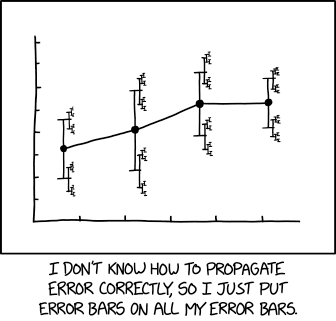